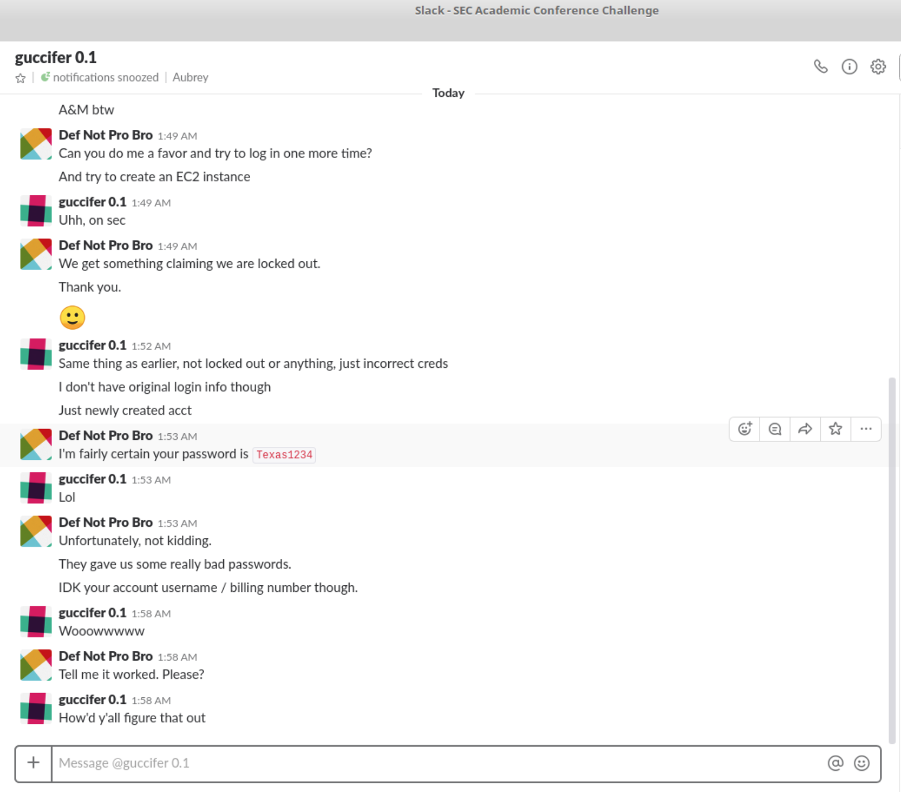

This weekend I drove all the way to the University of Alabama. Yes, I spent two weekends in a row in the great state of Alabama. At the University of Alabama, I participated in Crimson Hacks. Crimson hacks is a development focused computer science competition.
I have been to nine hackathons from Princeton to the University of Central Florida. Each hackathon has its own style and its own quarks. For example, Hack Georgia Tech serves two of every meal. And the food at Hack GT is very good. Alternatively, Build Her at Northwestern University is a female-centric event. The tech industry is dominated by men. A female focused hackathon is like a unicorn in the wild.
Crimson Hacks was a great hackathon. The staff was uniquely non-technical. I made friends with the organizers and their qualifications were a rainbow of technical and non-technical skills alike. It was astounding to see all the hard work the non-technical organizers put into Crimson Hacks. They really cared about the event because they could see the passion in the participants. The hacking space was beautiful. There were couches and tables and chairs and most importantly space! It was easy for hackers to spread out and get to work.
My team was focused on breaking stuff. We developed a tool that quickly scoured a website looking for a cross-site scripting vulnerabilities. Cross-site scripting is a technique malicious users employ. The goal of the malicious user is to get code, usually JavaScript, to run on other end points.
JavaScript is the backbone of the internet. It is a very powerful programming language. With JavaScript websites can control your webcam, steal your passwords, mine cryptocurrencies and much more. Cross-site scripting is most often used to steal session tokens (website cookies). The worst-case is complete compromise of your computer.
Detecting a cross-site scripting vulnerability is typically very difficult because it requires a lot of tester time. You need to find where the injected code will be rendered back to the victim and what code will successfully exploit the vulnerability. Once a foot hold is found a hacker must poke and prod to find a series of commands that both work, and achieve some end goal.
The team included myself and Terry Thibault. Cross-site Scripting for Dummies was Terry’s brain child. Bringing the idea into reality was an exciting learning experience for the two of us. We were proud to bring home third place for The University of Florida.